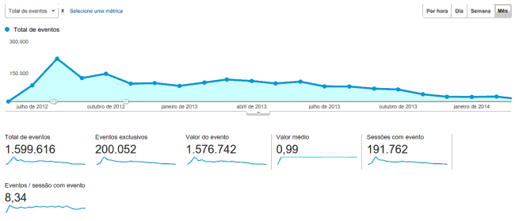

Long time, no text. I'll try to increase the frequency of my posts and don't give up because of the lack of time and excess of lazyness.
One of my first open source projects with any traction was Funblocker. I wrote about it in other posts, it was a Chrome extension to help remove all that stupid reshares from your Facebook timeline based on link context.
Funblocker was created in december 2011, had more than 3k active installations, removing more than 400k posts/month. It still has some users and remove 10k posts/month and has 1k active installations.
I created it as a side project, started as a JavaScript snippet for personal use, injected with Custom JavaScript for websites extension. It was useful for some job interviews and for my timeline sanity. Also, I learnt how to write a Chrome extension.
Fortunately, Facebook improved their ways to avoid these posts with built-in features, so this extension is almost useless and it is some abandonware now. My last commit is from nov/2013 and I have some bug issues reported and never fixed.
Check the Google Analytics events below, counting basically posts removed.
For historical reasons, the FunBlocker extension is still available and FunBlocker code is on GitHub.
Comments !